Spire Muse: A Virtual Musical Partner for Creative Brainstorming
Abstract
We present Spire Muse, a co-creative musical agent that engages in different kinds of interactive behaviors. The software utilizes corpora of solo instrumental performances encoded as self-organized maps and outputs slices of the corpora as concatenated, remodeled audio sequences. Transitions between behaviors can be automated, and the interface enables the negotiation of these transitions through feedback buttons that signal approval, force reversions to previous behaviors, or request change. Musical responses are embedded in a pre-trained latent space, emergent in the interaction, and influenced through the weighting of rhythmic, spectral, harmonic, and melodic features. The training and run-time modules utilize a modified version of the MASOM agent architecture.
Our model stimulates spontaneous creativity and reduces the need for the user to sustain analytical mind frames, thereby optimizing flow. The agent traverses a system autonomy axis ranging from reactive to proactive, which includes the behaviors of shadowing, mirroring, and coupling. A fourth behavior—negotiation—is emergent from the interface between agent and user. The synergy of corpora, interactive modes, and influences induces musical responses along a musical similarity axis from converging to diverging. We share preliminary observations from experiments with the agent and discuss design challenges and future prospects.
Author Keywords
Musical agents, interactive music systems, machine learning, co-creativity
CCS Concepts
•Applied computing → Sound and music computing; Performing arts; •Computing methodologies → Machine learning;
Introduction
All music creation starts with a spire. It could be a phrase; a sound object; a rhythmical pattern. Musicians—inspired by its sound, respire life into compositions by improvising around the idea, adding layers, growing complexity. Seemingly, the music takes a life of its own—it aspires to grow. For song-writing duos or small musical groups, ideas for music compositions often emerge in contexts of improvisational interactions between the musicians—so-called jams. A typical scenario would be a musician presenting a new idea to fellow musicians at a rehearsal, followed by a jam session to “see what ideas pop out”.
Modeled on this, Spire Muse is a virtual musical partner that stimulates creativity and optimizes flow—a state where one becomes so immersed in an activity that everything else loses importance [1]. We adopt the term musical agent defined as autonomous software agents that tackle musical tasks [2]. Obtaining and maintaining flow requires an environment that provides flexibility while supporting an associative cognitive process combined with internalized actions. In collaborative contexts, this, in turn, hinges upon interaction dynamics, i.e. the spontaneous shifting of interactive modes and style of turn-taking that occurs between agents when engaged in creative activity [3].
Creativity has no universal, agreed-upon definition. Historically, creativity has moved from being viewed as an inscrutable divine force—off-grounds from scientific inquiry—to being conceived of as an emergent process in the context of complex and distributed systems of interactions, with unpredictable outcomes and moment-to-moment contingency [4]. The fields of human-computer interaction (HCI) and artificial intelligence (AI) have also cultivated differing perspectives on creativity. In HCI, a widely adopted term is creativity support tools (CST) [5], denoting digital tools that are designed to support human creativity. Researchers studying creativity from the side of AI and machine learning tend to focus on computational creativity (CC), i.e. systems that generate artifacts that are judged by unbiased users to be creative [6]. The acknowledgment of creativity as an emergent property of interaction rather than an agential quality has led to a conflation of these concepts: Co-creativity occurs in collaborative contexts where both human and computational agents contribute to a process or product deemed creative [7].
We have focused on designing a co-creative system that realizes the concept of a virtual jam partner. Hence, the computational agent is seen as a collaborator as opposed to a tool or a creator, and we aim to place the human and computational agents in a tight interactive loop where each has the capacity to modify the behavior of the other [8].
Jamming to Grow Music
In musical collaborative contexts, jamming may be an efficient method to get from a basic musical idea to larger formal structures. An apt metaphor is thinking of a musical phrase as an elementary kernel. Interactions may “fertilize” this kernel and larger forms can “grow” from it. This notion led to the concept of a musical agent that supports session-based musical brainstorming. Musical form may emerge from the interaction, but events like this are mostly context-dependent and cannot be rule-driven.
Improvisation is a key factor in such open-ended creative interaction. A significant number of proposed models for improvised musical interaction revolve around interactive strategies focused on iterative phases of “pulling together” and “pushing apart”. Wilson and MacDonald [9] shed light on how improvising musicians regularly evaluate whether they should maintain or change what they are doing. A change can be either an initiative (something new) or a response (to what another musician is doing), and three emergent response categories are adoption, augmentation, and contrast. Borgo [10] describes how forms emerge in collective improvisation through positive feedback—a mutual reinforcement of a particular idea, and how interest is simultaneously maintained through negative feedback—an exploration of new ideas diverging from the current one.
Similar concepts are prevalent in models for co-creative systems. Dubnov and Assayag [11] introduce a flow model where improvisation occurs along the axes of replication, recombination, and innovation. Beyls [12] presents a model for human-machine interaction where the system’s behavior follows from the competition between the opposing forces of expression (output generated irrespective of or contrasting to current context) and integration (output that is complementary to the prevailing context and contributes to its further existence). Canonne and Garnier [13] invoke a model for collective free improvisation where strategies range from stabilization (attempts to converge to a “collective sequence”) to densification (deliberately creating complexity to provoke a transition). In this apparent terminological jungle, we propose that these concepts in essence are musical strategies that may be grouped along a musical similarity axis ranging from converging to diverging, as depicted in Figure 1.

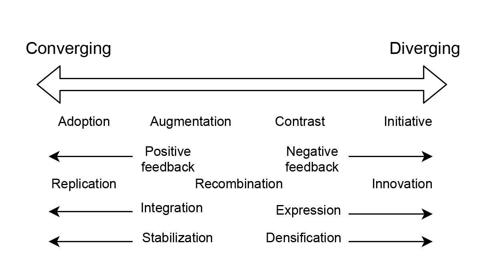
Musical strategies mapped onto the musical similarity axis.
These strategies inform us how agents—human or computational—relate to each other musically. However, the driving force behind the interaction dynamics is not accounted for. In interactions between humans, the distinction between actions and decision-making is barely noticeable—they are intrinsically interwoven. In HCI, however, the human user often acts as a substitute for the computational agent’s lack of decision-making capabilities. Most software interfaces are essentially a submission of decision-making power to the human user. An effect is that the user may become preoccupied with handling this aspect of the interaction to the detriment of co-creativity. A dimension is missing—the navigation between interactive behaviors of the system. For our purposes, we adopt four categories of behaviors for interactive music systems from Blackwell et al. [14]:
Shadowing involves a synchronous following of what the user is doing, mapped into a different domain. Despite lacking autonomy, the appearance of coherence can have a strong effect on the user and may lead to the generation of novelty through its interactive affordances.
Mirroring occurs when stylistic information or musical content is extracted from the user’s input and reflected back in novel ways. While taking lead from the user, this mode clearly demonstrates participation and can contribute to a form of collaborative creativity through the opening up of new possibilities.
Coupling refers to an interactive mode driven primarily by its own internal generative routines, which are perturbed in various ways by information coming from the user. Coupling tends to refer to a situation in which the system can clearly be left to lead, possibly to the detriment of the sense of participation.
Negotiation is a more sophisticated behavior. A system that negotiates constructs an expectation of the collective musical output and attempts to achieve this global target by modifying its output.
We regard negotiation as the “meeting space” where the musical agent trades decision-making with the human user. We place the shadowing, mirroring, and coupling behaviors along a system autonomy axis ranging from reactive to proactive. Negotiation happens when the system switches between these three behaviors, either autonomously or through manipulation by the user. Whereas the other three modes are embedded in the software itself, negotiation is a type of behavior that emerges from how the computational and human agents interact and influence each other. It is an interface-layer behavior and requires the sharing of decision-making. For this reason, negotiation does not map directly onto the autonomy axis and is placed above the other behaviors in Figure 2.

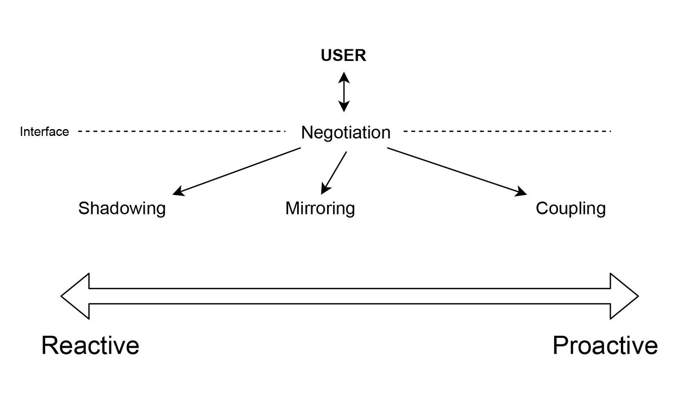
Interactive behaviors mapped onto the system autonomy axis.
In Figure 3, we have combined the axes of musical similarity and system autonomy in a two-dimensional diagram. We acknowledge that these axes are somewhat loosely correlated, but tending toward parallelity. We illustrate this by displaying the interactive behaviors diagonally. Behaviors that are more reactive also tend to generate converging musical results, and vice versa, proactive behavior will tend toward diverging musical output.

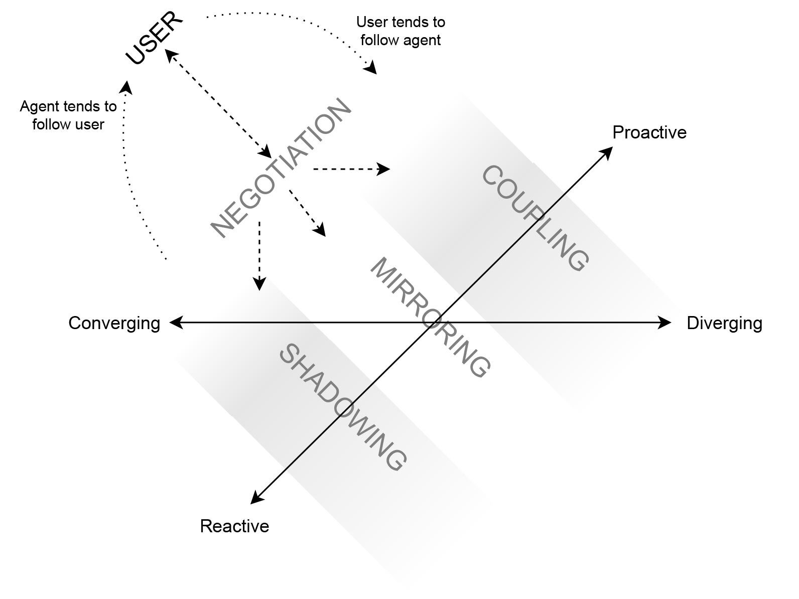
The similarity and autonomy axes combined.
Related Work
The history of musical agents is predated by the wider notion of interactive music systems, defined by Rowe as “those whose behavior changes in response to musical input” [15]. The degree of autonomy in interactive music systems is correlated with several distinct phases in their decades-long development. An early step from purely reactive sound systems toward interactivity happened with the construction of CEMS (Coordinated Electronic Music Studio) in the late 1960s. Founder Joel Chadabe described playing the system as “like conversing with a clever friend who was never boring but always responsive” [16]. In the 1970s, a group of experimental artists known as The League of Automatic Composers used affordable interlinked microcomputers in a series of concerts spun around the concept of “letting the network play” [17]—an early example of live electronic music performance.
These early interactive “composing systems” were embedded in analog hardware. The MIDI protocol paved way for in-the-box interactive music systems in the mid-1980s. Music Mouse [18], M and Jam Factory [19] were among the first commercially available interactive music systems for general use. They were like intelligent instruments that produced formal musical structures in real-time, controlled by the user. Some of the first accompanying systems that users could play together with as duo partners came with Oscar [20], Voyager [21], and Cypher [15] in the late 1980s. A few years later, improvisation systems making use of learned models instead of rules emerged. GenJam [22] used genetic algorithms to “breed” stylistically appropriate jazz solos to be played over predetermined sections of jazz standards. The Reactive Accompanist [23] provided chord accompaniment of unfamiliar melodies using subsumption architecture methodology. With Band-out-of-the-Box (BoB) [24], the human user traded four-bar solos in the style of blues/jazz with the machine agent. The agent utilized unsupervised machine learning techniques to adapt to the musical sense of its user. The Continuator [25] produced musical continuations to phrases introduced by users with the help of Markov models, allowing for a stylistically coherent back-and-forth interaction.
OMax [26] pioneered the use of Factor Oracles (FO) for music purposes. FO is a finite state automaton that efficiently learns internal relationships between components of a string, originally developed as a technique for string matching and compression [27]. The input is sliced and categorized according to an “alphabet” of events. Inside the FO, the input is represented as a string of events, with forward links (the original next state), suffix links (pointers to previous substrings recognized as matching the next substring), and forward jumps (pointers to future substrings recognized as matching the next substring). Thus, the FO reassembles the events in a manner that claims to yield a stylistic reinjection of the original sequence. OMax has spurred the development of several other FO-based systems, including Audio Oracle [28], PyOracle [29], Somax [30], and Improtek [31]. Our implementation of MASOM [32], which will be presented in further detail in the next section, also includes FO within its architecture.
Implementation of the Interactive Model
The Spire Muse musical agent builds upon MASOM (Musical Agent based on Self-Organising Maps) and is implemented in the Max graphical programming environment [32]. Our version of the agent architecture utilizes MuBu [33], PiPo [34], factorOracle [35], the Audio Influencer patcher from the Somax library [30], the zsa.dist object from Zsa.Descriptors [36] and the ml.som and ml.kdtree objects from the ml.* machine learning toolkit [37].
MASOM was originally designed to be used for electroacoustic and electronic music performance. This has resulted in several works featuring improvised noise music, acousmatic music, live electronics together with instrumental performers, and audiovisual installations [38]. MASOM has also been reimagined as a gibberish language agent relying on a latent space of syllables collected from the audio of speakers of several languages [39]. We have redesigned MASOM’s training module to optimize it for instrumental input and implemented novel interactive modes in the run-time modules. In the following, we provide an overview of the musical agent’s architecture and an ancillary interface as implemented in Spire Muse. We focus mainly on new features. For more details, readers can refer to previous papers about MASOM.
Training
The learning module constructs a latent space of musical events with varying durations. The duration range is adjustable—for our main experiments with an acoustic guitar corpus, we used a minimum length of 200 milliseconds and a maximum length of 3 seconds. The first stage of the learning process is the slicing of the audio in the source folder (the corpus). Onsets are calculated by measuring loudness transients, signifying new sonic events.
In the next step, each audio slice is labeled with a feature vector. Through experimentation, we found that using large FFT window and hop sizes (8192/512) yielded more reliable melodic and harmonic data. In all, there are 55 dimensions. The first is duration. The remaining dimensions are the mean and standard deviation of loudness (2), mel frequency cepstrum coefficients (MFCC) (26), fundamental frequency (2), and chroma (24). The chroma features (pitch histograms featuring the 12 notes in the chromatic scale) were added to strengthen the musical agent’s capability to orient itself harmonically as well as melodically. The inclusion of chroma features serves two functions. Firstly, it reinforces the melodic classification of slices containing one note. Equally important, it minimizes pitch errors introduced in slices containing several notes. The average pitch of two or more notes yields a single pitch that is musically out of context. However, the chroma features are discrete and can reveal the presence of several notes within one slice. Hence, there is a better chance for slices with similar harmonic content to be clustered together in the self-organizing map, even in cases where the derived pitch misrepresents the tonality.
A significant new inclusion in the training module is the extraction of chroma transition matrices from longer segments of the songs in the corpora. To achieve this, the chroma features are first discretized. The most dominant chroma features per vector are classified as ones, the rest as zeros. The threshold is set at 0.4 (the range is 0.0 to 1.0). With this discretization, the transformed vector essentially becomes a standard pitch class vector (see Table 1). Using a 20-slice long window with a hop size of four slices, the numbers of transitions between each pitch class are saved in 12x12 matrices with markers that signify song and slice indices per matrix. This is a convenient way to encode longer-term harmonic dynamics. In run-time, these matrices are looked up by the automation algorithm, detailed later.
Chroma vector | Becomes | |
Single note | 0.11 0.78 0.15 0.21 0.19 0.27 0.31 0.14 0.39 0.18 0.12 0.26 | 0 1 0 0 0 0 0 0 0 0 0 0 |
Multiple notes/ multiphonics | 0.65 0.09 0.23 0.13 0.41 0.29 0.17 0.59 0.22 0.19 0.08 0.14 | 1 0 0 0 1 0 0 1 0 0 0 0 |
A self-organizing map (SOM) is a type of artificial neural network that utilizes unsupervised learning to map high-dimensional feature vectors onto a two-dimensional topological grid [40]. Given a set of n-dimensional feature vectors, the learning algorithm organizes these vectors such that the resulting two-dimensional feature space is qualitatively aligned with the input. Each coordinate in the SOM, called a node, is a feature vector that represents approximations of a varying number of input vectors. On average, the number of nodes created is approximately one-sixth the size of the number of audio slices. After the SOM has been created, each audio slice is assigned to a node based on a best matching unit function (BMU). Hence, similar slices are clustered together at these nodes.
In the next step, the tempo for each song in the corpus is derived from a Python script via OSC. The tempo makes the generative playback in run-time more aligned with the song’s original tempo. For songs that are not tempo-based, the script will still attribute a perceived tempo. Although redundant, forcing a grid on atemporal material does not seem to have a negative impact—only minor time adjustments are made. Therefore, the grid is used for all material, and there is no need to create a dichotomy in the training process.
The final part of the training is a procedure where each song in the corpus gets encoded as a sequence of SOM nodes, using the BMU function. This is a lossy encoding, because many different audio slices may be represented by one SOM node. We find this memory compression and subsequent sequence modeling to be a good metaphor for the way musicians internalize musical events through rehearsal, and how such internalized events may be activated in unpredictable ways through association when interacting with other musicians. In jamming contexts, musicians feed off each other’s creative initiatives and take turns in following and leading. This constitutes a highly complex network of contingencies, where small deviations from expected musical trajectories may affect the interaction dynamics decisively. Our aim has been to model this combination of discernible stylistic residue from past performances and mutable interaction dynamics.
Influence parameters
In run-time, the machine listening algorithm continuously segments the user’s input stream into slices with durations that correspond to the ones in the corpus. We extract the same set of features from the input slices as those in the feature vector during offline training. The listening module can be directed to give some groups of features more weight than others, and this alters the subsequent matching algorithms considerably. The four influence parameters are rhythmic, spectral, melodic, and harmonic. The rhythmic parameter weights the duration feature. Setting the rhythmic parameter high and the rest low will make the agent search for material in the corpus that follows the timing of the input closely, but disregards the other features. The spectral parameter weights the MFCC features. The melodic parameter focuses on the fundamental frequency, and the harmonic parameter weights the chroma features. The influences can be set with sliders, so any combination of relative influence is possible.
Interactive Modes
Shadowing mode is the baseline behavior of the musical agent. The signal and data flows are depicted in Figure 4. In shadowing mode, the agent responds reactively and outputs the closest matching audio slice in the corpus for each onset registered in the input. Here, the influence parameters come into play—closest matches vary depending on how they are set.
SOM nodes are not looked up in shadowing mode. Instead, instances from the input are compared directly to the feature vectors belonging to the audio slices in the corpus. Looking up audio slices directly creates a better contrast to the mirroring mode, which looks up SOM nodes. Direct slice matching makes sense when attempting to create an impression of an agent that follows the user as closely as possible. We found that BMU outliers in the SOM nodes weaken this effect to a certain degree.
Sparsities in some areas of the feature space yield discrepancies between the input and respective slice matches. Rather than being unwelcome artifacts, they tend to make sense musically. The harmonic influence is useful here because harmonically related events have similar chroma profiles.

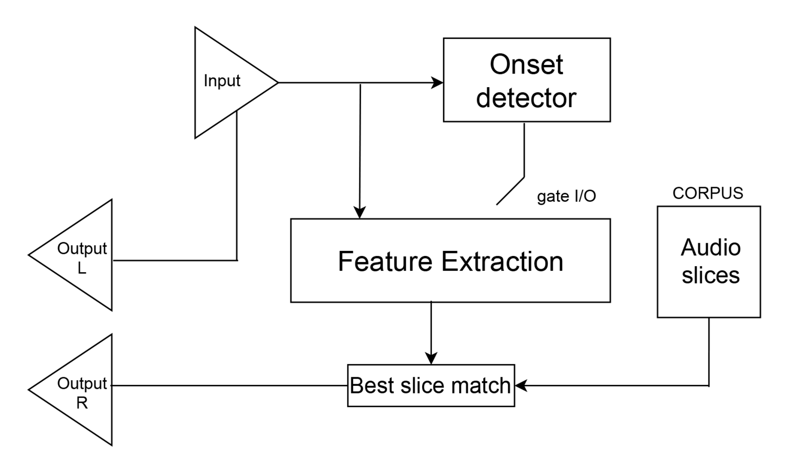
Input vs. corpus matching in shadowing mode.
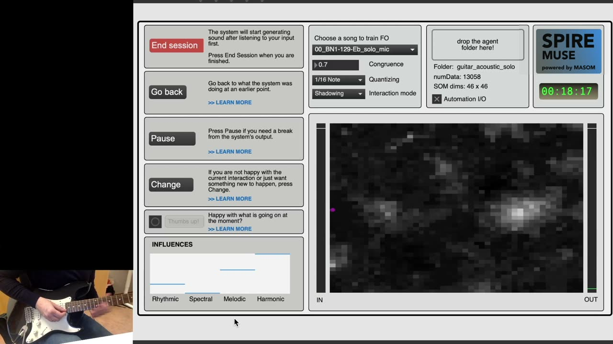
▶A free improvisation session in shadowing mode.
In mirroring mode, the musical agent engages in reflexive interaction. Unlike the shadowing mode, the agent does not respond to input immediately but listens to longer phrases and attempts to respond with similar phrases. Upon receiving input, the agent starts building a list of closest SOM matches based on audio slices from the input stream. Accumulated SOM lists are expedited after eight beats, according to a tempo detection object listening to the input. Using a k-d tree algorithm, the processing module finds the closest matching SOM subsequence among the list of songs encoded as SOM sequences. A Factor Oracle (FO) of the song containing the matching subsequence is initiated, using the initial perceived SOM index as the initial state. The playback of the FO lasts for as many nodes as the length of the list that loaded it. For eight beats after the FO is initiated, SOM list gathering is inactive, corresponding roughly to the length of the agent’s response. This creates a sense of back and forth between the user and the agent. This process iterates as long as the mirroring mode is active.

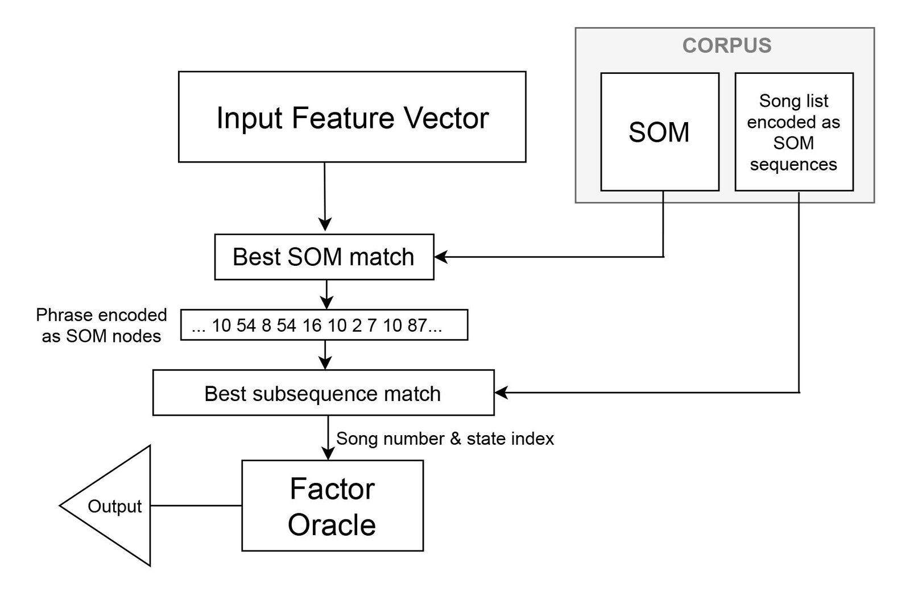
Input vs. corpus matching in mirroring mode.
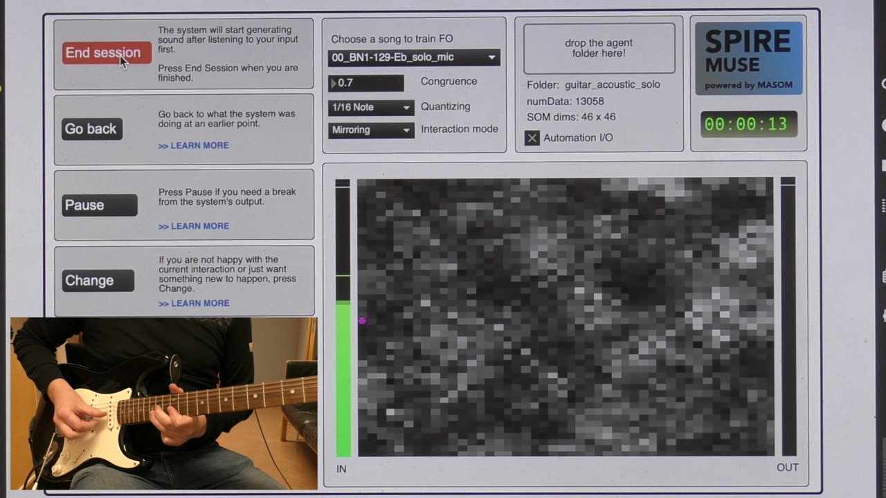
▶Improvising in mirroring mode.
In coupling mode, the user is “coupled” to an FO, which is played back continuously. Left unperturbed, the FO iteratively queries its next state, thereby taking on an autonomous style that may coerce the user to follow the musical agent’s lead. However, the agent listens to the user and attempts to align with the input by intermittently loading new FOs from other songs in the corpus or by jumping to new states within the same FO. The input buffer for this part of the machine listening is 20 input slices—corresponding to the window length of the chroma transition matrices that were built during training.
The song that is automatically loaded from the corpus into the FO is selected based on a combination of two criteria:
Meso time scale harmonic dynamics: A chroma transition matrix of the past 20 input onsets is compared with corresponding matrices built from the corpus. Songs associated with the top ten matches are contenders for affecting an FO change.
Tempo similarity: A list of songs that are within plus/minus 10 bpm of the currently detected tempo is gathered.
If one or more same songs feature in both these groups, the FO will load the highest scoring match and initiate the change. After a change, the input buffer will start building anew, so changes will be no more frequent than the time it takes to fill the buffer.

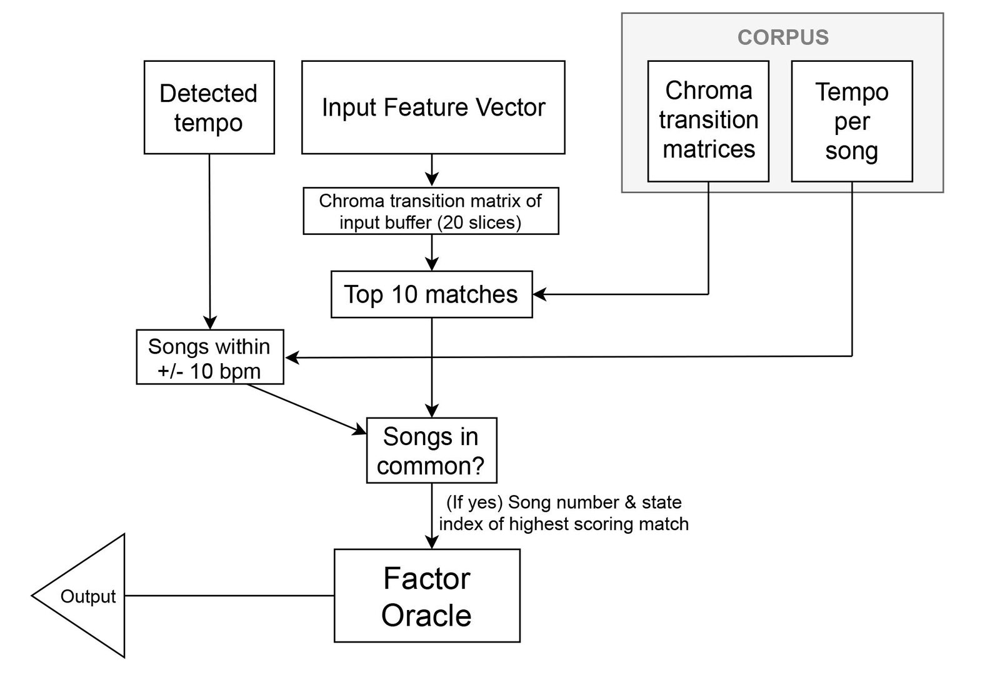
Input vs. corpus matching in coupling mode.
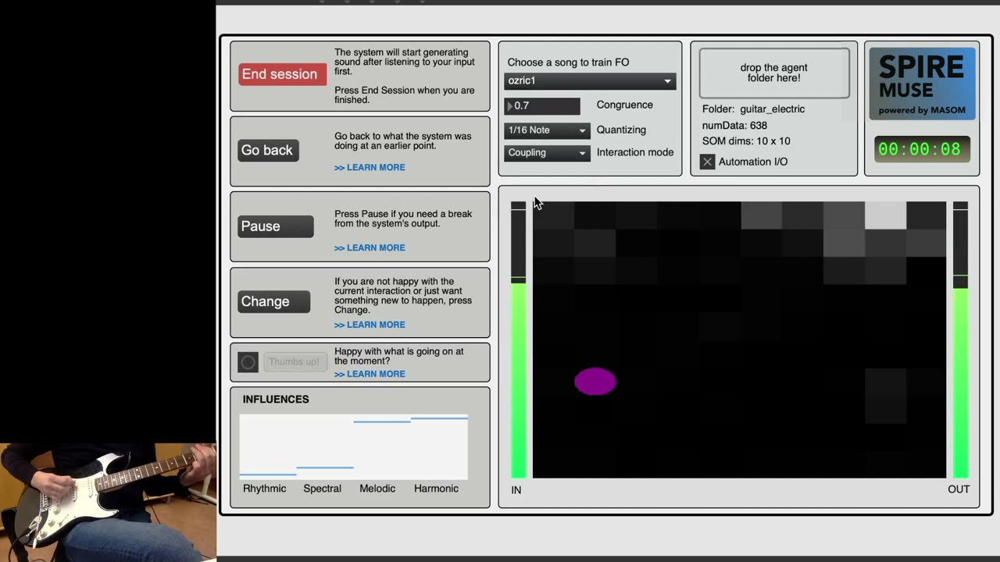
▶Interaction in coupling mode (automated song changes disabled).
Automation
Several studies point to a lack of awareness on the performer’s part during optimal performance, and neurological research seems to confirm that typical flow experiences are accompanied by the suppression of central processes associated with self-monitoring and conscious volitional control [9]. This suggests to us that a musical agent designed for the purpose of optimizing flow should minimize the need for users to analyze their own performance in relation to the musical agent's current state. Our focus was thus guided to making an agent that transitions between interactive behaviors autonomously.
For now, the automation algorithm is quite simple. Shadowing is the initial mode, and it is also the fallback mode if the mirroring and coupling modes do not meet the qualifications for activation. Mirroring mode is activated if the SOM subsequence match contains at least three identical SOM matches (the k‑d tree algorithm comes up with many approximate matches). Mirroring mode deactivates if this qualification is not reached again within 20 seconds. Coupling mode jumps into action when the FO change threshold is met, and the mode is sustained for at least 30 seconds. Unless a new FO change is detected within this time, the mode is deactivated. The mirroring and coupling modes may “quarrel” if they both qualify at the same time. In this case, the latest qualifier will “win”.
Automated shifts in interactive modes will underperform in some contexts, especially in cases where corpora are sparse or consist of heterogeneous audio material. Therefore, there is an option to turn off automation, in which case the interface switch to another view (Figure 7). Manual selection of modes and songs will result in a more contemplative kind of session, giving the user more time to explore each mode and the generative modeling uninterrupted.

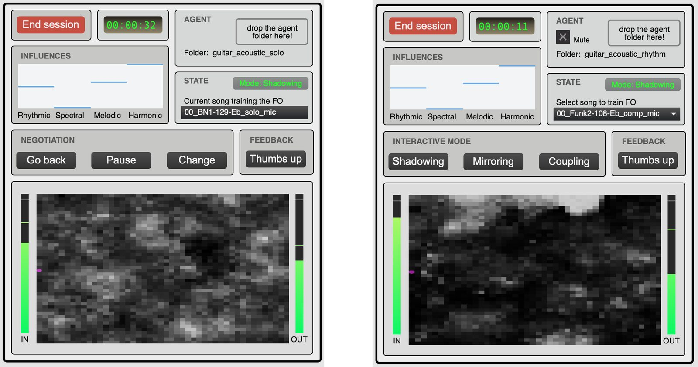
The Spire Muse interface as per April 2021. Left: Automation view. Right: Manual view. Pressing the tab key toggles between the two views.
The Negotiating Interface
The negotiating interface functions as a counterweight to the agent’s automated behaviors, and features the buttons Go back, Pause/Continue, Change, and Thumbs Up. Go back forces the agent to its previous mode. This backtracking can be repeated. The agent tracks its own history, which also includes FO song changes. Pause will mute the agent but it is still listening. This is useful if the user needs time to figure out something in his or her playing without interruption. Upon pressing Continue, the session will proceed based on the most recent listening. Change will force the agent away from its current state. For now, this sets the interactive mode, influences, and FO song selection randomly.
The Thumbs Up button signals to the agent that the user is enjoying the current interaction, and stays in the same state for the next 30 seconds. In future versions, we envisage that Thumbs Up can be used for online reinforcement learning. Through repeated use, the agent will learn what kind of states and transitions the user prefers in different kinds of contexts.
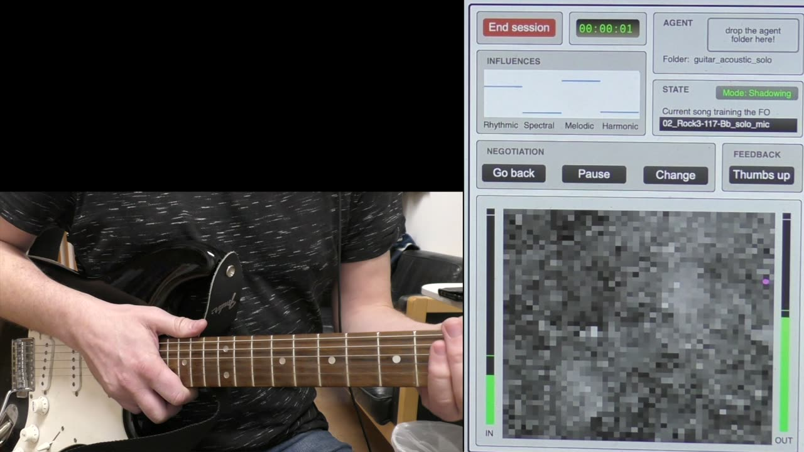
▶Demo session featuring the use of the negotiation panel. The buttons are operated with foot pedals.
Discussion and Future Work
This version of Spire Muse is a proof of concept. An extensive user study is scheduled for June 2021. To date, it has been tested by the first author using corpora containing acoustic guitar, electric guitar, vocals, and oboe. The main focus has been on an acoustic guitar corpus [41]. An earlier version of the software has also been used in concert by a solo guitarist/live electronics musician1 using corpora containing electric guitar, violin, vocals, and various collections of sampled sounds.
Spire Muse is designed to encourage creative exploration and defer cognitive deliberation. Although it clearly does not approximate a real-life musician, our experience so far gives the impression of a versatile musical agent that listens quite well and frequently responds with pleasantly surprising material. The more contrasting responses can help users break out of habitual playing styles and spur them to explore new creative spaces. Even the slave-like shadowing mode may yield musical responses that can create interesting contrasts between the human and agent‑performed material. This is because both converging and diverging aspects are to be found even in the nearest matches, and weighting features differently can have significant effects on the output.
Of course, the corpus choice is of importance. Experiments with various corpora have resulted in very different kinds of jam sessions. In a sense, one is importing an imprint of someone’s personality with the corpus—the musical agent engages in style imitation, and the outcome of the interaction potentially becomes something novel. This makes Spire Muse reliant on good selections of corpora. The mirroring mode is particularly exposed to fragilities in corpus selection and influence settings. The “casting back” of musical phrases modeled on SOM subsequences makes the mode well suited for call-and-response type interaction, but for some SOM regions, the interaction could become erratic. It is a volatile mode that may lead to highly diverging kinds of musical responses, especially if the corpus is sparse. Some responses may represent sharp breaks from the user’s current performance. As described, a mirroring mode may jump into action from the shadowing mode, and the experience may be that the output suddenly “goes off on a tangent”. The user may be coerced to moderate his or her playing as a reaction to such abrupt changes.
The coupling mode is particularly prone to yielding flow experiences. Due to the nature of the FO algorithm, the interaction becomes more loop-based in this mode. On several occasions, the first author became immersed in the interaction and only afterward discovered that ten minutes had gone by without actively engaging with the interface—a promising observation. Although we regard this version of Spire Muse as an early prototype, we are surprised by how absorbing the interaction feels.
The negotiating interface provides manipulation of behaviors that are high-level and gives plenty of room for autonomy for the agent. The correlate of this autonomy is unpredictability. However, we regard unpredictability as an important ingredient of co-creativity. As with human musical partners, unpredictability may be frustrating at times but also an asset. Ultimately, we believe the most auspicious feature of Spire Muse is not the musical output of the agent per se, but the capacity to entice users into exploring ideas with a sense of shared ownership.
In future versions of Spire Muse, we are planning to implement machine learning algorithms that can rein in some of the unpredictability through repeated usage. Since the agent tracks each session and keeps tabs on the states that it goes through, it can build a profile of the user and adapt its behavior in response to different kinds of contexts.
Acknowledgments
We would like to thank Kıvanç Tatar for sharing the MASOM code and departing knowledge about the system through email correspondence and virtual meetings, and Bálint Laczkó for help with programming the k-d tree algorithm. We would also like to thank Bernt Isak Wærstad for his invaluable feedback.
Footnotes
Bernt Isak Wærstad. Sentralen, Oslo, Norway, October 30, 2020. Artist website: https://www.berntisak.no/
↩
Citations
- ↩Csikszentmihalyi, M. (1996). Creativity: flow and the psychology of discovery and invention. New York: HarperCollinsPublishers.
- ↩Tatar, K., & Pasquier, P. (2018). Musical agents: A typology and state of the art towards Musical Metacreation. Journal of New Music Research (Vol. 48, pp. 56–105).
- ↩Davis, N., Hsiao, C.-P., Singh, K. Y., Lin, B., & Magerko, B. (2017). Creative Sense-Making: Quantifying Interaction Dynamics in Co-Creation. In Proceedings of the 2017 ACM SIGCHI Conference on Creativity and Cognition (pp. 356–366). 3059478: ACM.
- ↩van der Schyff, D., Schiavio, A., Walton, A., Velardo, V., & Chemero, A. (2018). Musical creativity and the embodied mind: Exploring the possibilities of 4E cognition and dynamical systems theory. Music & Science (Vol. 1, pp. 1–18).
- ↩Shneiderman, B., Fischer, G., Czerwinski, M., Resnick, M., Myers, B., Candy, L., … Terry, M. (2006). Creativity Support Tools: Report From a U.S. National Science Foundation Sponsored Workshop. Int. J. Hum. Comput. Interaction (Vol. 20, pp. 61–77).
- ↩Colton, S., & Wiggins, G. A. (2012). Computational creativity: the final frontier? In Proceedings of the 20th European Conference on Artificial Intelligence (pp. 21–26). IOS Press.
- ↩Jordanous, A. (2017). Co-creativity and Perceptions of Computational Agents in Co-creativity. In Proceedings of the Eighth International Conference on Computational Creativity, Atlanta, Georgia, USA, June 19-23, 2017. (pp. 159–166).
- ↩Deterding, S., Hook, J., Fiebrink, R., Gillies, M., Gow, J., Akten, M., … Compton, K. (2017). Mixed-Initiative Creative Interfaces. In Proceedings of the 2017 CHI Conference Extended Abstracts on Human Factors in Computing Systems (pp. 628–635). 3027072: ACM.
- ↩Wilson, G. B., & MacDonald, R. A. R. (2016). Musical choices during group free improvisation: A qualitative psychological investigation. Psychology of Music (Vol. 44, pp. 1029–1043).
- ↩Borgo, D. (2005). Sync or Swarm: Improvising Music in a Complex Age. New York: The Continuum International Publishing Group Inc.
- ↩Dubnov, S., & Assayag, G. (2005). Improvisation planning and jam session design using concepts of sequence variation and flow experience. In Proceedings of sound and music computing (pp. 1–1). Salerno, Italy: Zenodo.
- ↩Beyls, P. (2008). On-line Development of Man-Machine Relationships: Motivation-driven Musical Interaction. In Proceedings of the 11th generative art conference (pp. 11–24).
- ↩Canonne, C., & Garnier, N. B. (2012). Cognition and Segmentation In Collective Free Improvisation: An Exploratory Study. In International Conference on Music Perception and Cognition, 2012, Thessaloniki, Greece (pp. 197–204).
- ↩Blackwell, T. M., Bown, O., & Young, M. (2012). Live Algorithms: Towards Autonomous Computer Improvisers. In J. McCormack & M. d’Inverno (Eds.), Computers and Creativity (pp. 147–174). Berlin: Springer-Verlag.
- ↩Rowe, R. (1992). Interactive Music Systems: Machine Listening and Composing. Cambridge, MA: The MIT Press.
- ↩Chadabe, J. (1997). Electric Sound: The Past and Promise of Electronic Music. Upper Saddle River, New Jersey: Prentice Hall.
- ↩Brown, C., & Bischoff, J. (2002, Summer). Indigenous to the Net: Early Network Music Bands in the San Francisco Bay Area. Retrieved from http://crossfade.walkerart.org/brownbischoff/index.html
- ↩Dean, R. T. (2003). Hyperimprovisation : computer-interactive sound improvisation. Middleton, Wis: A-R Editions.
- ↩Zicarelli, D. (1987). M and Jam Factory. Computer Music Journal (Vol. 11, pp. 13–29).
- ↩Beyls, P. (n.d.). Introducing Oscar. In Proceedings of the International Computer Music Conference (pp. 219–230).
- ↩Lewis, G. E. (2000). Too Many Notes: Computers, Complexity and Culture in “Voyager.” Leonardo Music Journal (Vol. 10, pp. 33–39).
- ↩Biles, J. A. (n.d.). GenJam: A Genetic Algorithm for Generating Jazz Solos. In International Computer Music Conference (pp. 131–137).
- ↩Bryson, J. (1995). The Reactive Accompanist: Adaptation and Behavior Decomposition in a Music System. In L. Steels (Ed.), The biology and technology of intelligent autonomous agents. Berlin: Springer.
- ↩Thom, B. (2000). BoB: an interactive improvisational music companion. In Proceedings of the fourth international conference on Autonomous agents (pp. 309–316). ACM.
- ↩Pachet, F. (2003). The Continuator: Musical Interaction With Style. Journal of New Music Research (Vol. 32, pp. 333–341).
- ↩Assayag, G., Bloch, G., Chemillier, M., Cont, A., & Dubnov, S. (2006). OMAX Brothers: A Dynamic Topology of Agents for Improvisation Learning. In ACM Multimedia Workshop on Audio and Music Computing for Multimedia (pp. 125–132). Santa Barbara.
- ↩Allauzen, C., Crochemore, M., & Raffinot, M. (1999). Factor Oracle: A New Structure for Pattern Matching. In 26th Conference on Current Trends in Theory and Practice of Informatics (pp. 295–310). Milovy, Czech Republic.
- ↩Dubnov, S., Assayag, G., & Cont, A. (n.d.). Audio Oracle Analysis of Musical Information Rate. In 2011 IEEE Fifth International Conference on Semantic Computing (pp. 567–571).
- ↩Surges, G., & Dubnov, S. (2013). Feature Selection and Composition Using PyOracle. In Proceedings of the 2nd International Workshop on Musical Metacreation (MUME 2013), held at the Ninth AAAI Conference on Artificial Intelligence and Interactive Digital Entertainment (AIIDE’13) (pp. 114–121).
- ↩Bonnasse-Gahot, L. (2014). An update on the SOMax project. IRCAM: Technical Report.
- ↩Nika, J., & Chemillier, M. (2012). Improtek: integrating harmonic controls intoimprovisation in the filiation of OMax. In International Computer Music Conference (ICMC), Sep 2012, Ljubljana, Slovenia (pp. 180–187).
- ↩Tatar, K., & Pasquier, P. (2017). MASOM: A Musical Agent Architecture based on Self-Organizing Maps, Affective Computing, and Variable Markov Models. In Proceedings of the 5th international workshop on musical metacreation (MUME 2017), held at the Eighth International Conference on Computational Creativity, ICCC 2017 (pp. 1–8).
- ↩Schnell, N., Röbel, A., Schwarz, D., Peeters, G., & Borghesi, R. (2009). MuBu and Friends - Assembling Tools for Content Based Real-Time Interactive Audio Processing in Max/MSP. In Proceedings of the 2009 International Computer Music Conference, ICMC 2009. Montreal, Quebec, Canada.
- ↩Schnell, N., Schwarz, D., Larralde, J., & Borghesi, R. (2017). PiPo, a Plugin Interface for Afferent Data Stream Processing Operators. In ISMIR - 18th International Society for Music Information Retrieval Conference.
- ↩Wilson, A. J. (2016). factorOracle: an Extensible Max External for Investigating Applications of the Factor Oracle Automaton in Real-Time Music Improvisation. In MUME 2016 - The Fourth International Workshop on Musical Metacreation.
- ↩Malt, M., & Jourdan, E. (2008). Zsa.Descriptors: a library for real-time descriptors analysis. In 5th Sound and Music Computing Conference (pp. 134–137). Berlin, Germany.
- ↩Smith, B., & Deal, W. S. (2014). ML.* Machine Learning Library as a Musical Partner in the Computer-Acoustic Composition Flight. In Proceedings of the 2014 International Computer Music Conference (pp. 1285–1289). Athens, Greece.
- ↩Tatar, K., Pasquier, P., & Siu, R. (2018). REVIVE: An Audio-Visual Performance with Musical and Visual AI Agents. In Extended Abstracts of the 2018 CHI Conference on Human Factors in Computing Systems (pp. 1–6). Montreal QC, Canada: Association for Computing Machinery.
- ↩Boersen, R., Liu-Rosenbaum, A., Tatar, K., & Pasquier, P. (2020). Chatterbox: an interactive system of gibberish agents. In Proceedings of the 26th International Symposium on Electronic Art ISEA2020 (pp. 55–62). Montreal, Canada.
- ↩Kohonen, T. (1990). The self-organizing map. In Proceedings of the IEEE (Vol. 78, pp. 1464–1480).
- ↩Xi, Q., Bittner, Rachel M., Pauwels, J., Ye, X., & Bello, Juan P. (2018). Guitarset: A dataset for guitar transcription. In E. Gomez, X. Hu, E. Humphrey, & E. Benetos (Eds.), Proceedings of the 19th International Society for Music Information Retrieval Conference, ISMIR 2018 (pp. 453–460). International Society for Music Information Retrieval.